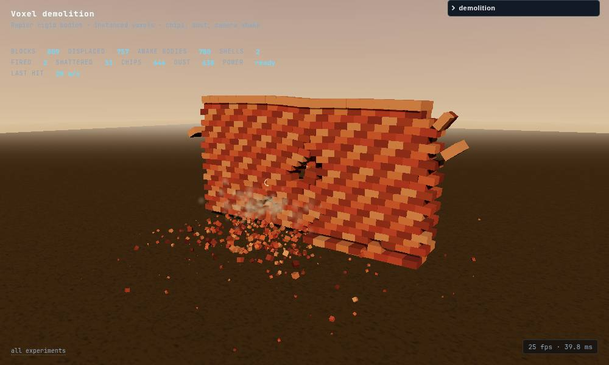
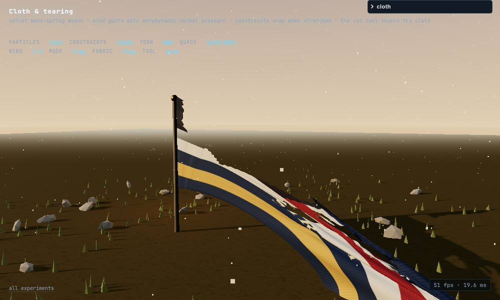
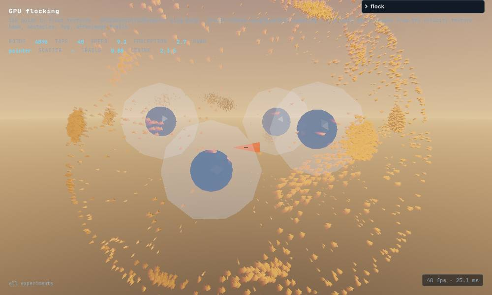
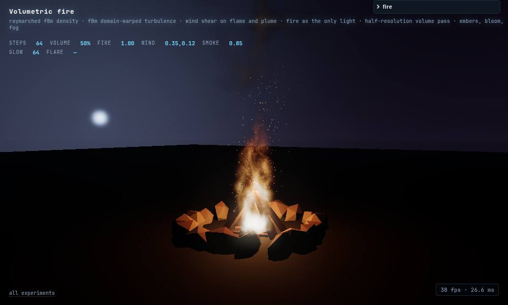

STRATA TEST — BROWSER LAB
Ten three.js things in plain static files: no build step, no npm, no server. Pinned CDN importmap (three 0.170.0, lil-gui 0.19.2, Rapier 0.14.0), ES modules, one folder per thing. Built by Strata running pi headless, one task per build, each verified in headless Chromium.
FIVE GAMES →
Breakout, runner, marble maze, tower defense, flight — on one shared arcade kit: CRT bezel, procedural textures, particles, bloom, WebAudio, HUD in a pixel face.
games/ published at
/games/ · hub of cabinets · scores, sound, restartFIVE GRAPHICS EXPERIMENTS →
GPU water, voxel demolition, tearing cloth, GPU flocking, volumetric fire — motion and graphics pieces with a control panel, a quality preset and interaction hints on every page.





experiments/ published at
/experiments/ · measured table in experiments/README.md